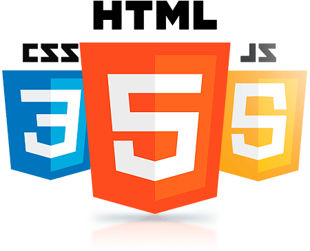
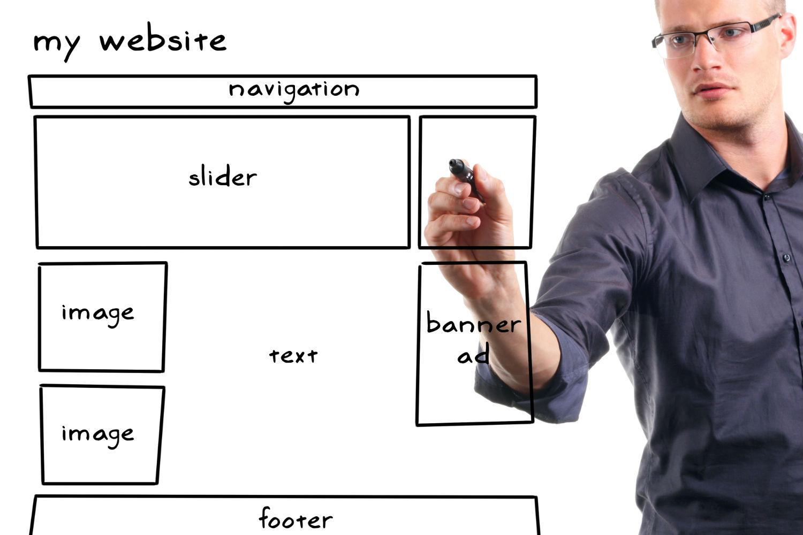

CSS, HTML e JavaScript.
CSS e JavaScript
Com a disciplina SI401 esperamos aprender melhor como funciona a programação voltada para a Web!
Queremos ser capazes de compreender as principais linguagens de marcação e estilo e desenvolver scripts para execução em navegadores e servidores web.
